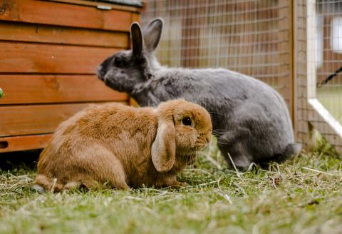

Rabbits are small mammals with fluffy, short tails, whiskers and distinctive long ears. There are more than 30 species around the world, and while they live in many different environments, they have many things in common.  Rabbits and hares are in the same taxonomic family, Leporidae, but they are in different genera. There are 11 genera within the family, but the term "true hares" refers only to species in the genus Lepus; all others are rabbits. Also, the American Rabbit Breeders Association (ARBA) recognizes 49 rabbit breeds.
Some rabbits are about the size of a cat, and some can grow to be as big as a small child. Small rabbits, such as pygmy rabbits, can be as little as 8 inches (20 centimeters) in length and weigh less than a pound. Larger species grow to 20 inches (50 cm) and more than 10 lbs. (4.5 kilograms).
Ref: https://www.livescience.com/28162-rabbits.html
Additionally, heres a video of some cute bunnies!